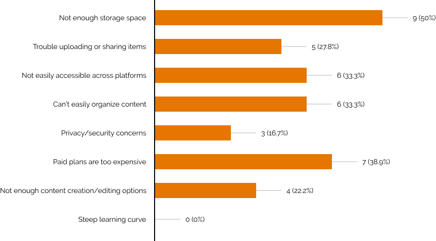
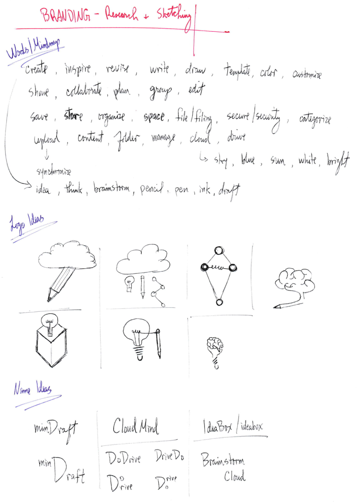

CloudMind is a new cloud-based storage service that empowers its users to take their world wherever they go with peace of mind. Includes more available storage space, account security, a catch-all file organization system, and more robust content creation and manipulation controls on an easygoing and intuitive design.
Research & Discovery Information Architecture & Ideation Interactive Design & Testing Visual Design
TOOLS
Google Forms, Figma, inVision
PROBLEM
A client of mine was excited about potential in the cloud storage market and had a list of features they would like to include in the end product. It was up to me to cement a foundation for this project through user research and discovery, followed by ideation and testing, then applying visual design principles and retesting to develop a fresh competing product.
SOLUTION
CloudMind was developed on large and small screens to compete in the market while also maintaining its individuality. CloudMind’s branding plays into that idea. Blue is often used to represent calmness, trust and security. Orange inspires energy and creativity. This solution bridges the gap between idea and end product and in the process provide a viable user-focused alternative.
User Insights
All cloud storage (CS) users use these services on their smartphones and 75% of them also use the services on their PCs. Users highlighted the following features as important to have:
Uploading files from device(s) (93.8%)
Saving content found on the web (68.8%)
Sharing items/folders with others (62.5%)
Organizing content (50%)
Real-time collaboration (43.8%)
On the flipside, folks have experienced the greatest amount of frustration in terms of lack of storage space, expensive subscriptions, and difficulty organizing content, among others.

To attract new customers, this service would need a good amount of free storage space, built-in security features (encryption, passwords and expiring links), cross-platform accessibility, and more intuitive file creation and synchronization processes. Greater emphasis would be placed on a CS design for personal and work use based on users’ preferences.
Competitive Analysis
Google Drive is the most well-known cloud storage brand given its affiliation with Google. It offers 15GB of storage to start, a full content creation suite, third-party app integration, and a great variety of plans with benefits. However, the higher-end storage plans are too expensive, and Google has been scrutinized for privacy concerns.
Dropbox offers file-sharing with expiring links and/or password protection, general file encryption, Microsoft Office access, and paid plans automatically generate offline versions of your uploaded files for convenience. However, there are limited plan options, clunky sharing and organization mechanics, poor app integration, and only 2GB of free starting storage.
OneDrive, a Microsoft product, integrates seamlessly with the Windows OS and offers students modest discounts on their plans. However, it does not integrate well with non-Microsoft apps, only provides 5GB of free starting storage, and users aren’t guaranteed security and encryption unless under a business plan. Lower-end plans only offer storage space, meaning you would have to buy Microsoft Office separately.
All of the research data gathered up to this point is just that: data. It’s important to remember that this service is being developed for people to use, and thus I created two distinct user personas in order to humanize that data as a reminder to approach the rest of the design process with empathy.
Naomi Chan
Social Media Manager Age 25 | Phoenix, AZ
MOTIVATIONS
Naomi hopes to become a full-time blogger and influencer in the travel space, and is already on track with her own website, which includes stories and photos of her many adventures. She wants to be able to store all of these files in the cloud to access them from her phone or laptop. She also hopes to use a service that has a detailed categorization system since her current service isn’t so efficient.
FRUSTRATIONS
Not enough storage space
Limited organization options
Poor upload and sync processes
"
I love sharing my experiences around the world with my audience.
"
#traveler #outgoing #friendly
#travelblogger #extroverted #adventurer
Tamara Bell
Teacher Age 29 | New York, NY
MOTIVATIONS
Tamara is passionate about educating young minds and preparing them for the future. She works closely with other teachers to craft quality lesson plans and (when appropriate) supplementary material. She uses Google Drive as it gives the most free storage space, but is looking for something that offers a larger storage space at a more modest price than the current competition.
FRUSTRATIONS
Concern for lack of security
Not enough categorization options
Clunky sharing mechanics
"
As I like to tell my students: collaboration is the key to success!
"
#teacher #organized #friendly
#educator #teamplayer #collaborative
User Stories and Flows
Before drafting designs, it’s important to know what functionalities to design for. User stories tell us what needs to be done. Thinking of the user insights and research, I compiled a list of twenty user stories that were important in developing a minimum viable product. We now know what to do, but how should those tasks be done? What is required to get from point A to point B? Enter user flows. User flows help visualize that journey from where one is to where one wishes to be by the end of a task (or series of tasks). I designed flows that demonstrate the steps needed to upload a file to the cloud, create a new file, organize files, and link to other social accounts.
This is where the big picture starts coming together. Knowing what I want this app to do, how to do it, and for whom, I began sketching out ideas for what the final product could look like. Sketching with pen and paper is essential to a smoother design process; it’s better to make mistakes now to save time and money later.
What looks good and practical may not necessarily be so. To gain an understanding of what worked well, what didn’t, and what changes can be made, I conducted two user tests. Both users were in the same age range as my user personas to maintain consistency. They felt comfortable with navigating the prototype. However, the following points were noted based on these tests and on feedback from the leader designer:
The “New” button felt misleading in that the test participant assumed they could also upload from there
Consider changing the display of images and information on the homepage from column to Z-Pattern
Instead of choosing between a template or “going blank,” show blank template in selection pop-up
To develop this brand, I created a wordmap and from that exercise I began developing potential logo ideas. I noted that other competitors’ logos have some sort of cloud in their logo, which inspired some of my logo ideas. I also wanted to include something that conveys collaboration, hence some of my ideas showing open dots connected with lines. The logo sketches then informed the brand name. Blue was a recurring color among other competitors’ brands, symbolizing trust, calmness, and security, and so I experimented with shades of blue during the coloring process. To communicate the idea of creation and collaboration, both high-energy activities, I implemented variations of orange.
I settled on CloudMind as the brand name. The Josefin Sans type was chosen for the brand as it felt bold and modern without being over-the-top. Alegreya Sans functions as the complement due to its greater versatility. During this phase of the branding process, I also designed a new logo that I eventually decided on. I then updated it to be simpler and easier to scale down to smaller resolutions.

COLORS
B3E8F8
094AB2
01397A
E67600
F8D9B8
FBEAD9
FFF1D0
FEFBF3
Blues are used for most buttons and suggestive/hyperlinked text. Oranges are applied to some buttons or stand-out items.
TYPOGRAPHY
Branding - Josefin Sans
Complement - Alegreya Sans
View Style GuideJust before starting mockups, I played around with the ‘mind’ in CloudMind, while wanting to include the connected dots to signify sharing.
Mockups and Testing
Time for a fresh coat of paint! The high fidelity mockups underwent the greatest number of iterations as I sought insights and feedback from leader designers. I designed these mockups for desktop and mobile platforms, then tested the desktop version as I felt that the feedback would also inform any tweaks that could be made to the mobile version. They can be viewed here.
I opted to diversify my test participant demographic, including folks that are middle-aged. I tested three participants and asked them to describe what they liked, and what they found confusing or frustrating as they completed three tasks: sign up for an account, create a new document, and recovering an account password. The users liked the layout of the homepage, and their feedback pointed to two fixable discrepancies: make the “Forgot Password” link more pronounced (like a button), and give the user control over the confirmation window that shows after requesting a password reset link (different users read at different paces).
I also performed preference tests on three specific things in my design: the layout of icons in the portion of the desktop homepage outlining CloudMind’s features, the background of the login and signup overlays on mobile, and the placement of the upload button on the mobile dashboard. All results were split even, and all came down to personal preferences as opposed to any easily identifiable trend(s). I opted to keep everything as is.
Looking back at this project’s progression I found that I struggled with sizing, specifically with fonts and buttons. While working on a canvas, frame, or artboard, one spends so much time zooming in and out that it can distort their sense of sizing. My experience with developing the high fidelity mockup cemented how vital the iterative design and feedback process is. My biggest challenge came during the branding phase for the simple fact that we tend to take the brands we see for granted without knowing what goes on behind the scenes. During that process I also learned that sometimes your best or most fitting ideas may not come when you need them, but while you apply a metacognitive approach to design, you may begin to uncover new and innovative concepts.
The design choices throughout CloudMind’s development felt validated in participants’ feelings during the user tests; it was reflected in their generally positive response to the layout and colors. The most valuable takeaway was that it takes a village (or at least another teammate) to arrive at a cleaner and well thought-out design; without constant guidance and feedback CloudMind would not look or feel as clean as it does.